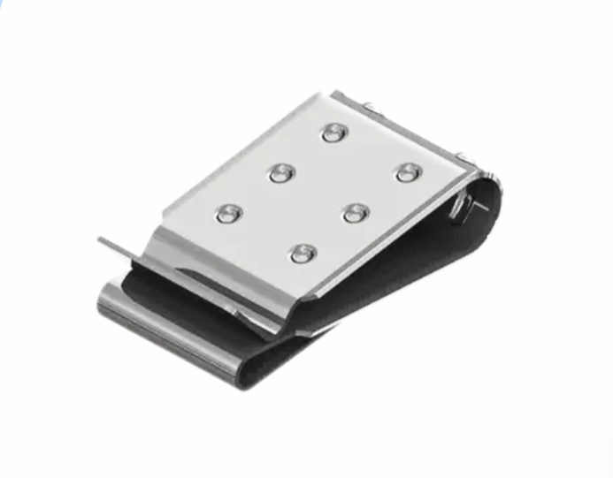
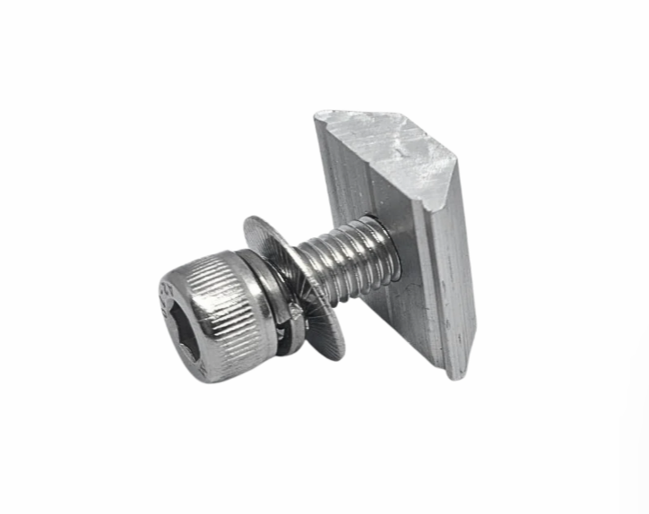

Cable Clip M10
(คลิปยึดสาย) แบบโลหะ รุ่น M10
: ขนาด M10
: วัสดุ Merterail AL6005-T5

Ground plate
แคลมป์กราวด์
: ป้องกันไฟฟ้ารั่ว และช่วยระบายไฟฟ้าสถิตลงดิน
: วัสดุ Merterail AL6005-T5

Grounding lug
กราวด์ดิ้ง ลัก
: ยึดและเชื่อมต่อสายดินเข้ากับโครงสร้างระบบโซลาร์เซลล์
: วัสดุ Merterail AL6005-T5 - Stanless 304

Bolt+Nut M8*25 mm.
สลักเกลียวกับน็อตตัวเมีย 8*M25
: ขนาด 8 × M25
: วัสดุ Merterail AL6005-T5 - Stanless 304

Bolt*T-Nut
สลักเกลียวกับน็อตตัวเมีย
: ทนทานและยึดจับมั่นคง
: วัสดุ Merterail AL6005-T5 - Stanless 304

Sheet Metal Screws
สกรูเกลียวปล่อย (เจาะเหล็ก)
: ขนาด 75 mm.
: วัสดุ Merterail AL6005-T5 - Stanless 304

Timber Screws
สกรูเกลียวปล่อย (เจาะไม้)
: ขนาด 60 mm.
: วัสดุ Merterail AL6005-T5 - Stanless 304

Rubber Pad *M8
แผ่นยาง
: ขนาด M8
: ป้องกันน้ำซึม เพิ่มความแน่นหนาในการยึดน็อต M8
.png)
L-Feet 80 mm. (Full set)
ขายึดรูปตัว L (เต็มชุด)
: ขนาด 80 mm.
: วัสดุ Merterail AL6005-T5 - Stanless 304
.png)
L-Feet 80 mm. (Klip lock)
ขายึดรูปตัว L (คลิปล็อค)
: ขนาด 80 mm.
: วัสดุ Merterail AL6005-T5 - Stanless 304

L-Feet 80 mm.
ขายึดรูปตัว L
: ขนาด 80 mm.
: วัสดุ Merterail AL6005-T5 - Stanless 304
.png)
L-Feet 160 mm. (Full set)
ขายึดรูปตัว L (เต็มชุด)
: ขนาด 160 mm.
: วัสดุ Merterail AL6005-T5 - Stanless 304
.png)
L-Feet 80 mm. ตัวเปล่า (สำหรับ Hanger Bolt)
ขายึดรูปตัว L ตัวเปล่า
: ขนาด 80 mm.
: วัสดุ Merterail AL6005-T5 - Stanless 304

End Clamp 30/35 mm.
ตัวหนีบปลาย
: ขนาด 30/35 mm.
: วัสดุ Merterail AL6005-T5 - Stanless 304

Mid Clamp 30/35 mm.
แคลมป์กลาง
: ขนาด 30/35 mm.
: วัสดุ Merterail AL6005-T5 - Stanless 304

Long Stud
ขายึดกระเบื้องลอนคู่
: เป็นฐานรับน้ำหนักแผง ปรับระดับองศาราง
: วัสดุ Merterail AL6005-T5 - Stanless 304

L-Feet+Hanger Bolt
ขายึดรูปตัว L ครบชุด (สำหรับกระเบื้องลอนคู่)
: เป็นจุดรับน้ำหนักแผง
: วัสดุ Merterail AL6005-T5 - Stanless 304

Rail Splice Kit
ตัวต่อรางโซลาร์เซลล์
: ขนาด 120 mm.
: วัสดุ Merterail AL6005-T5

Flat tile Hook
ตะขอเกี่ยวกระเบื้องแบน
: ใช้ยึดโครงสร้างรางโซลาร์เซลล์กับหลังคาแผ่นเรียบ
: วัสดุ Merterail AL6005-T5 - Stanless 304

Cpac Hook
ตัวยึดหลังคาซีแพค
: ติดตั้งง่าย ไม่ต้องตัดกระเบื้อง
: วัสดุ Merterail AL6005-T5 - Stanless 304

Klip Lock 700
ขายึดสำหรับหลังคาเมทัลชีท
: ยึดกับสันลอนโดยตรง ไม่ต้องเจาะหลังคา
: วัสดุ Merterail AL6005-T5 - Stanless 304

Klip Lock รุ่น D
ขายึดสำหรับหลังคาเมทัลชีท
: ยึดกับสันลอนโดยตรง ไม่ต้องเจาะหลังคา
: วัสดุ Merterail AL6005-T5 - Stanless 304

Klip Lock 750
ขายึดสำหรับหลังคาเมทัลชีท
: ไม่ต้องเจาะหลังคา แข็งแรง ทนต่อแรงสั่นสะเทือน
: วัสดุ Merterail AL6005-T5 - Stanless 304